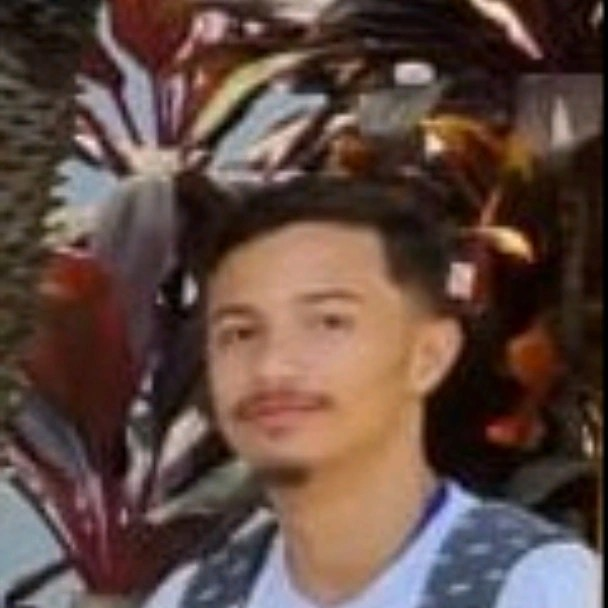
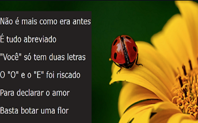
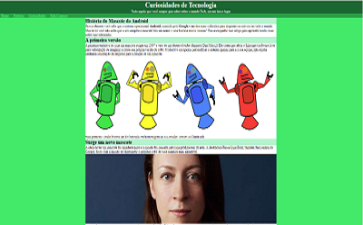

Sobre Min
Rio de Janeiro, Brasil
Durante minha jornada como estudante, adquiri experiência em desenvolvimento web através de projetos acadêmicos e pessoais. Dediquei-me para aprimorar minhas habilidades em frameworks como Bootstrap e bibliotecas como jQuery, para otimizar a criação de interfaces modernas e dinâmicas.
Além disso, estou sempre buscando aprender novas tecnologias, como Vue.js e React, para expandir meu conhecimento e acompanhar as tendências do mercado.
Sou um profissional dedicado, focado em entregar soluções de alta qualidade e que estejam alinhadas com as necessidades dos clientes. Tenho facilidade em trabalhar em equipe e estou aberto a feedbacks construtivos, pois acredito que a colaboração é essencial para o crescimento profissional.
Estou empolgado para fazer parte de equipes de desenvolvimento e contribuir para o sucesso de projetos desafiadores. Meu objetivo é continuar evoluindo como programador front-end, aperfeiçoando minhas habilidades e adquirindo experiência prática no mundo real. Confira meu portfólio para ver alguns dos projetos em que trabalhei e sinta-se à vontade para entrar em contato comigo para discutir como posso contribuir em sua equipe ou projeto.
Skils
Projetos

Projeto Cordel Moderno
Apresento-lhe meu projeto. Criei uma interface intuitiva, responsiva e segura, que oferece aos usuários uma experiência agradável e protege suas informações.Estou animado(a) para compartilhar mais detalhes e discutir oportunidades de colaboração.
Tecnologias: HTML, CSS
Projeto Android
Apresento-lhe meu projeto. Criei uma interface intuitiva, responsiva e segura, que oferece aos usuários uma experiência agradável e protege suas informações.Estou animado(a) para compartilhar mais detalhes e discutir oportunidades de colaboração.
Tecnologias: HTML, CSS , JavaScript, Bootstrap